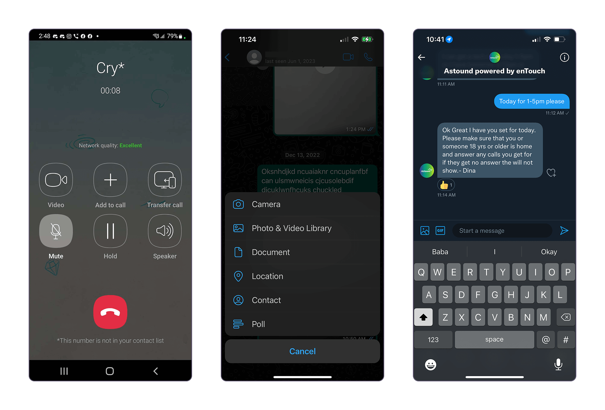

Mobile app screens with light and dark themes
Create a new mobile experience that consolidates critical Voice and Chat functionalities into a single platform while adapting complex workflows for mobile usability.
I just joined the company and this was my first project out the gate with supervision from my UI Director. Due to time and budget constraints, we could not perform the full discovery and research process. To learn what I could about the products, I analyzed user flows from old design files and tested the live product. I asked product managers and engineers questions to get a better understanding of how the product worked. It felt like a discovery process through the entire project as there were so many features to condense into a simple mobile app.
Along with internal insight, users were providing feedback via G2, a B2B software and services review platform.
"I wish there was a way to have UJET on a mobile device."
- Director of Client Services (1/17/2018)
The Voice and Chat channels had traditionally existed as separate products. Merging them into one mobile experience posed new UX and technical hurdles.
Voice and Chat had complex multi-step workflows traditionally performed on desktops. Adapting desktop workflows into a simplified mobile experience without compromising essential features required additional refinement.
Complying with WCAG standards was a priority as part of the company's initiative to be inclusive. We needed to ensure all our users could perform their tasks without hindrance.
Since I didn't have experience designing a chat messaging and call/voice app, I performed an indirect competitive analysis of other communication apps. I attempted to perform a direct competitive audit but couldn't access those products with my limited capabilities. I researched apps like iOS, Android, Whatsapp, Viber, Telegram, Meta, and Google. I took note and captured behaviors to find common patterns between the communication apps.
I had experience designing for responsive websites but not with a mobile application. I researched best practices to maintain accessibility like the minimal button size. I tested my phone to observe gestures and behaviors to incorporate into the designs.

Since many features already existed on other platforms, I focused on refining and adapting those experiences for mobile with mobile accessibility as my guideline. This included ensuring the target areas of buttons were at least 40-45px to account for various finger sizes. We naturally designed the app to be intuitive with iOS devices, which hindsight was not the best decision. I believe we should have designed for both devices since many of our users tend to use Android phones (an insight from the product team).
Additionally, I expanded existing user flows to include detailed action steps. Many of the previous design files were missing essential information to understand the actions users are taking and the feedback. It was difficult for me to understand as a newcomer and I spent more time asking simple questions.

Request verification user flow
Due to the fast-paced startup environment, I don't have numerical metrics for the impact of the mobile app. However, I have pulled quotes from users specifically mentioning the mobile app. These reviews are pulled from G2, a B2B software and services review platform.

"[...] is a straightforward mobile application that can be helpful and simple to use. It has a good user interface with few buttons, which might occasionally make it more difficult for users to engage with the system."
- Customer Service Representative (8/21/2023)
"Mobile-Friendly Experience: [...] is designed to provide a seamless experience across different devices, including smartphones and tablets. This allows customers to access support whenever and wherever they need it."
- Member Experience Associate (10/26/2023)

An omnichannel and multi-platform design system for a CCaaS B2B startup

Product UX/UI redesign of two web apps for a CCaaS B2B startup

Product UX/UI of an email channel web app for a CCaaS B2B startup

Product UX/UI of a multi-channel desktop app for a CCaaS B2B startup